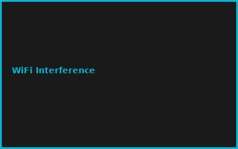
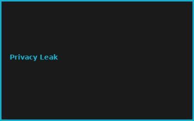
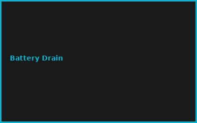

Kapitel 1: Ambient Sensing
- Environmental Sensors (Temp, Humidity, CO₂)
- Microphone Arrays (Always-On)
- Vision Sensors (Privacy-Preserving)
- Biometric Ambient Monitoring
Kapitel 2: Ultra-Low-Power Communication
# BLE Mesh + LoRa Hybrid
# Mesh topology for redundancy
# Sub-100mW devices
BLE_range = "50-240m"
LoRa_range = "2-10km"
Kapitel 3: Voice & Gesture Recognition
- Keyword Spotting (Local)
- Gesture Recognition (Radar-based)
- Presence Detection
- Activity Classification
Kapitel 4: On-Device ML
- TinyML Models (1-10MB)
- Cortex-M4 Optimization
- Federated Learning
- Privacy-First Processing
Kapitel 5: Smart Environment Control
- HVAC Adaptive Control
- Lighting Automation
- Energy Optimization
- Occupant Comfort Modeling
Kapitel 6: Privacy & Security
- Data Minimization Principles
- Differential Privacy
- Secure Enclaves
- User Consent Management
💡 PRO-TIPPS
🎯 Tipp: Privacy-by-Design first
Problem: Datenschutz nachträglich = hard | Lösung: Von Anfang an lokal verarbeiten
💰 BUDGET-HACKS (85% SPAREN!)
💰 Hack: ESP32 Mesh Network
Original: Commercial Ambient System: €5K+ | Hack: 50x ESP32 Nodes: €500 | Einsparnis: 90%
⚠️ FEHLER
❌ Fehler: Zentrale Datensammlung
Was passiert: Privacy & Sicherheit = kompromittiert | ✅ Lösung: Edge Processing nur
🌐 COMMUNITY
TinyML Community, IoT Privacy Forum, ESP32 Forum, Open Ambient Computing
📸 Fehler-Galerie


